Whistler
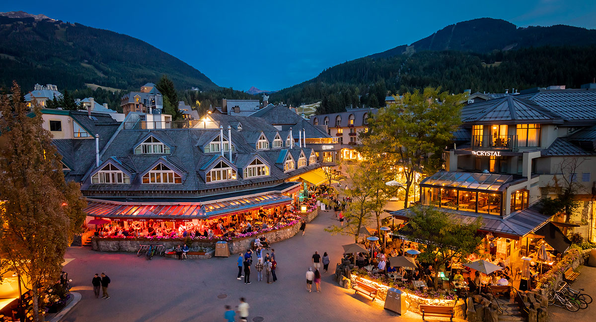

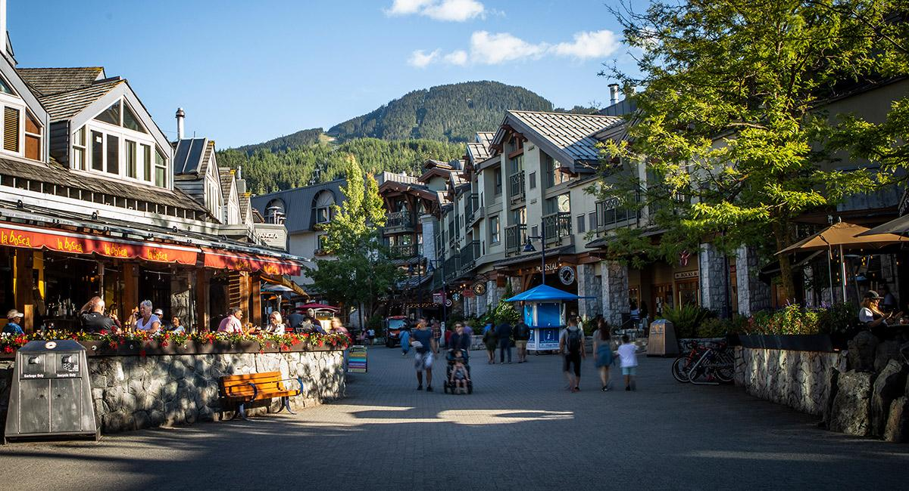
Whistler is a world-famous mountain resort located north of Vancouver. It is known for skiing and snowboarding at Whistler Blackcomb, as well as hiking, biking, and scenic gondola rides in the summer. The lively pedestrian village offers shops, cafes, and stunning alpine views year-round.
Vancouver
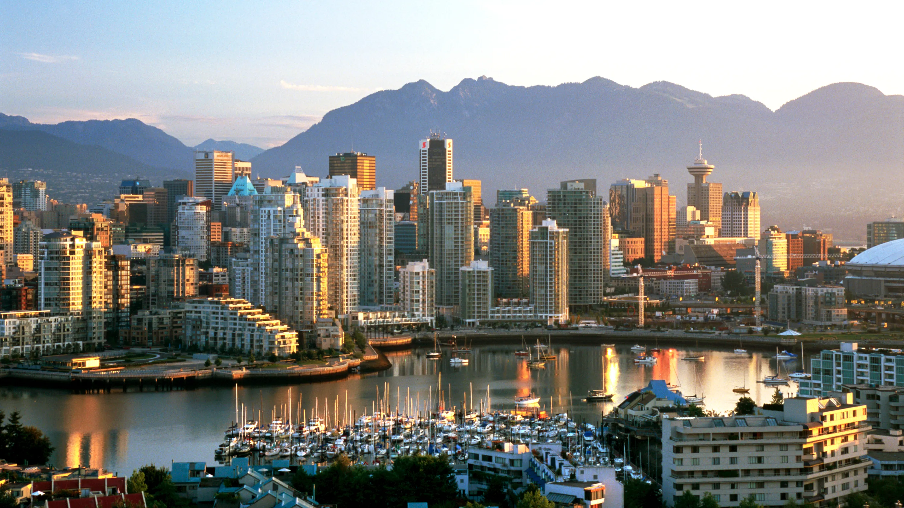
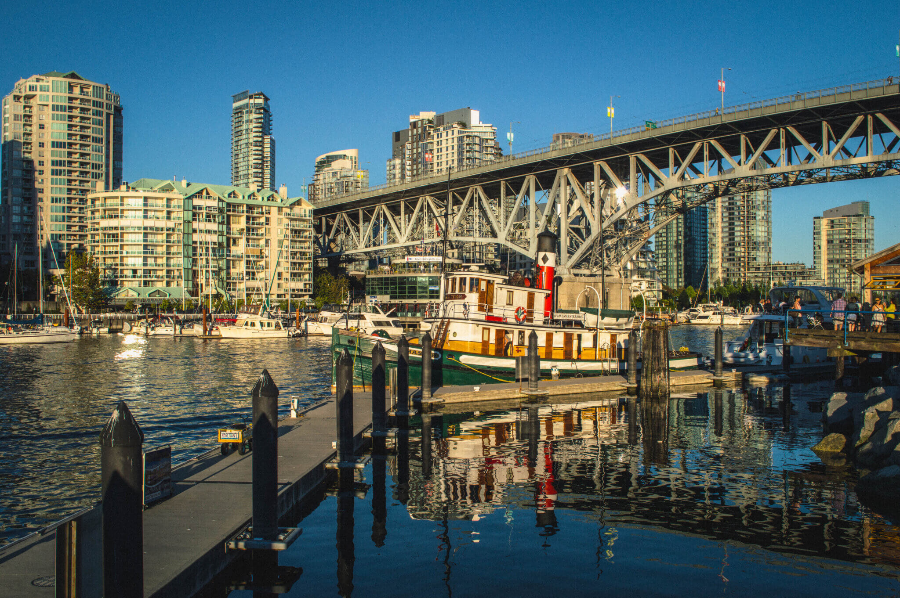
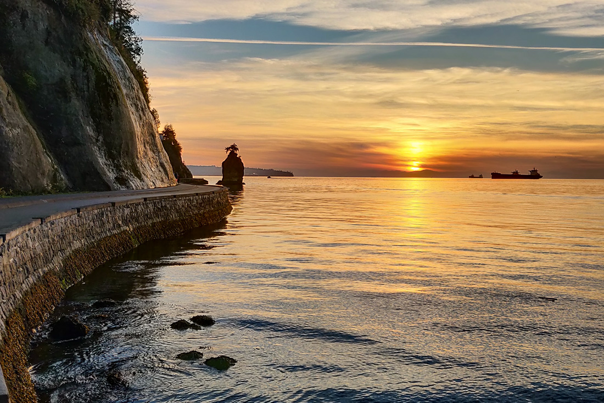
Vancouver is a vibrant coastal city surrounded by mountains and ocean. Visitors can bike around Stanley Park, relax on the city’s beaches, or explore neighborhoods like Gastown and Granville Island. The city offers a perfect balance of outdoor adventure and urban culture.
Tofino
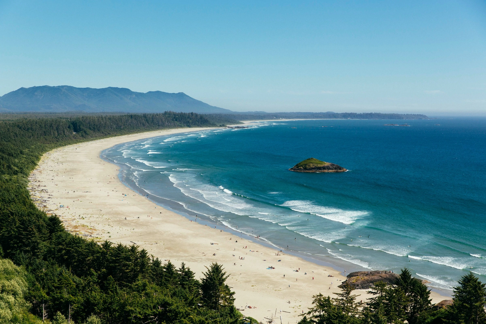
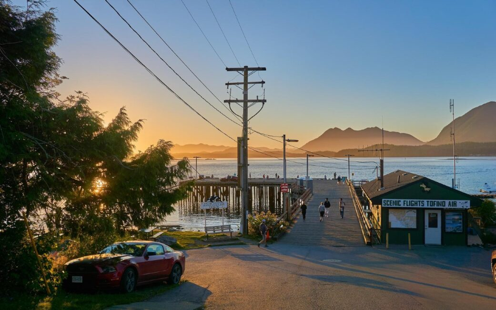
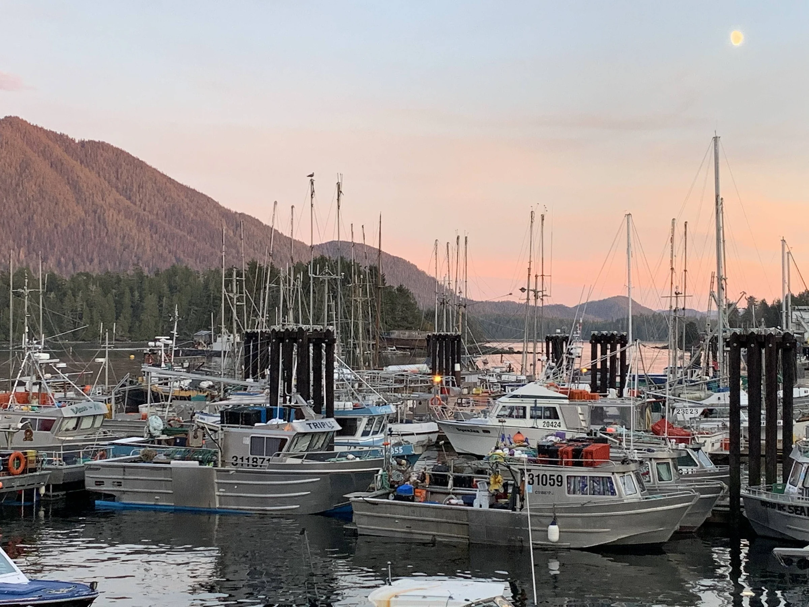
Tofino is a small coastal town on Vancouver Island famous for surfing and breathtaking ocean scenery. Located near Pacific Rim National Park Reserve, it features long sandy beaches, lush rainforests, and opportunities for whale watching and kayaking.
Victoria
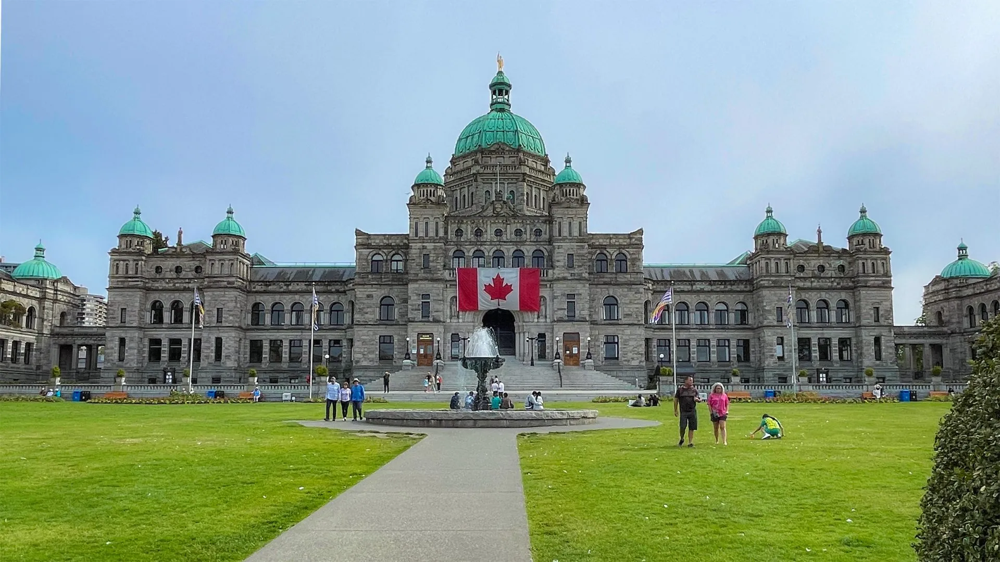
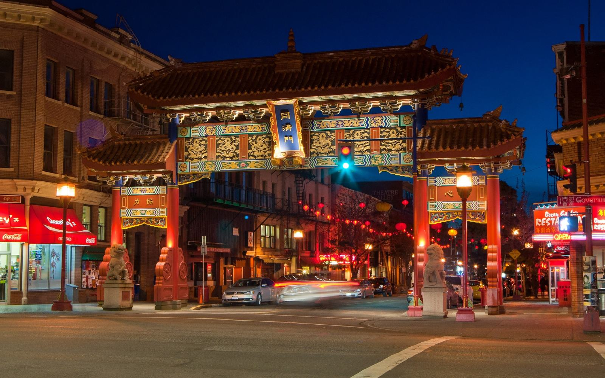
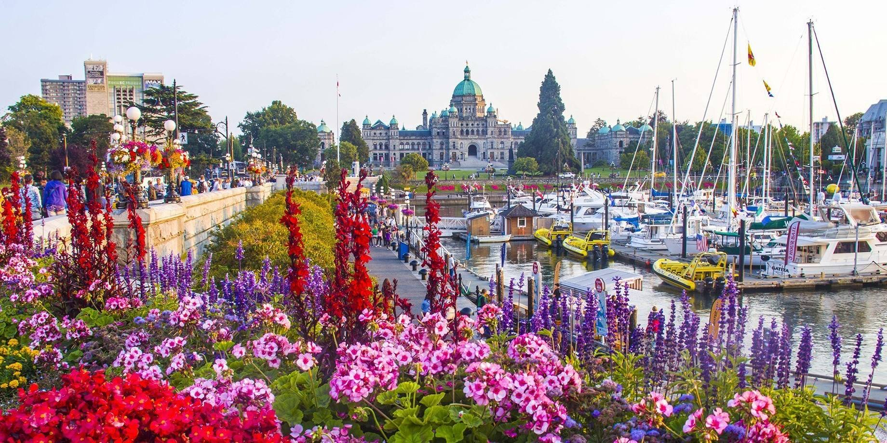
Victoria, the capital city of British Columbia, is known for its historic charm and beautiful waterfront. Visitors can explore the Inner Harbour, visit the famous Butchart Gardens, or enjoy museums, parks, and scenic coastal views.
Kelowna
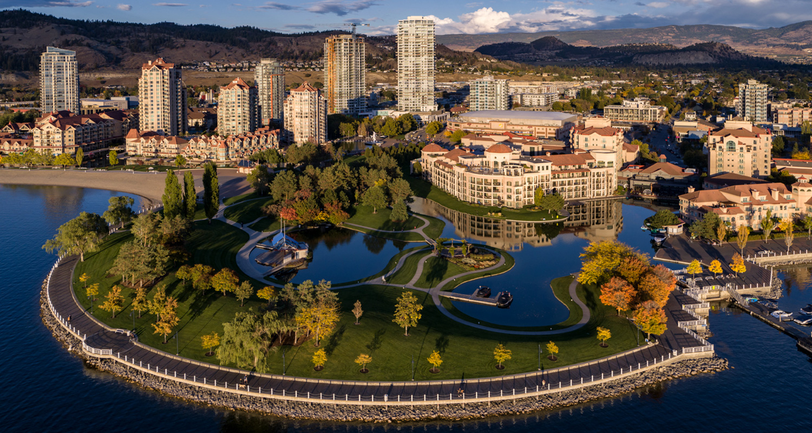
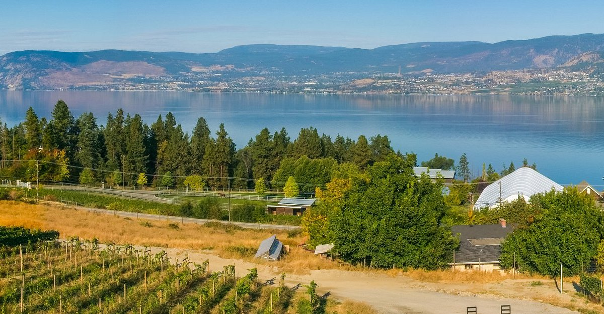
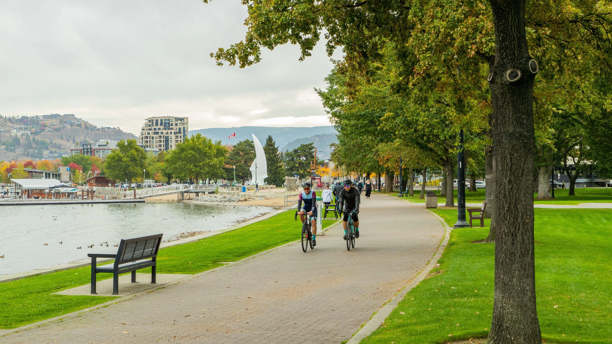
Kelowna is located in the sunny Okanagan Valley and is known for its warm climate, vineyards, and lakefront scenery. Visitors can relax on Okanagan Lake beaches, tour local wineries, or explore nearby hiking and biking trails.
Revelstoke
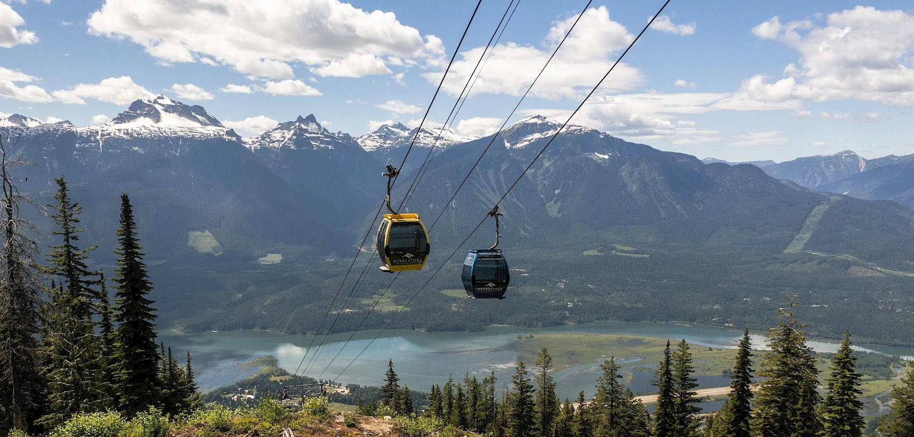
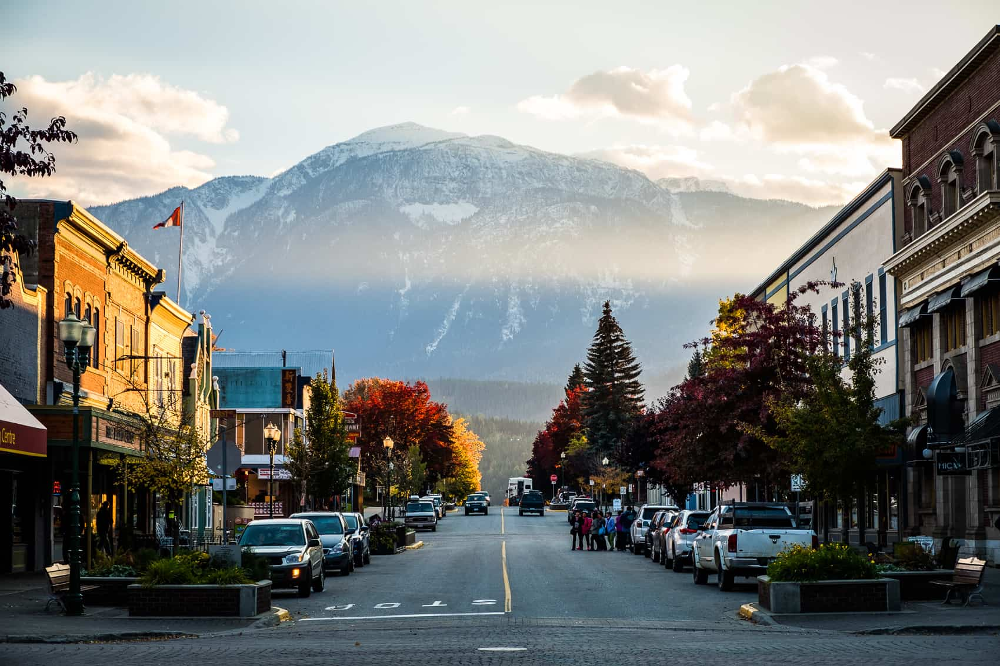
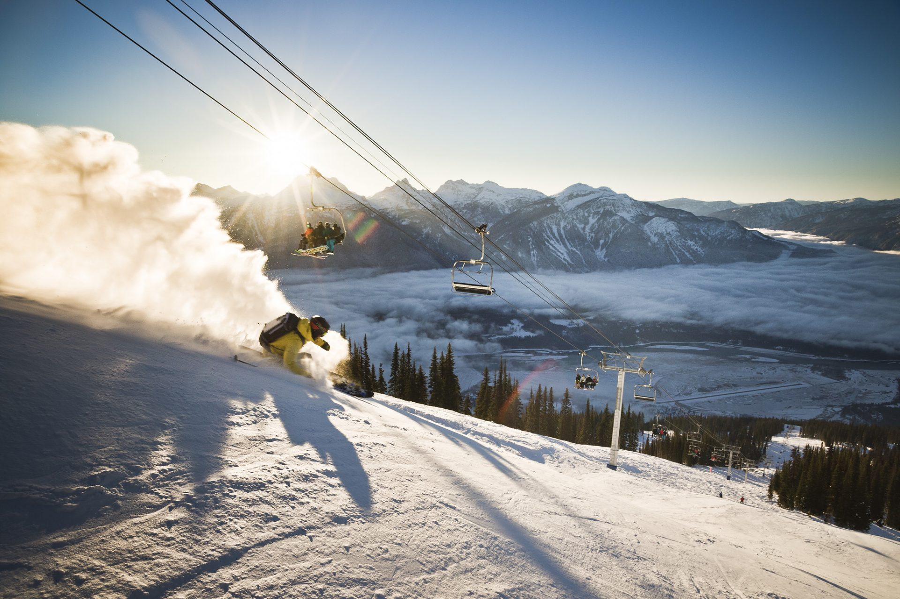
Revelstoke is a scenic mountain city known for year-round adventure. Visitors can enjoy world-class skiing at Revelstoke Mountain Resort, as well as hiking, biking, and gondola rides in the summer. With its charming downtown and stunning alpine views, it is a perfect spot for outdoor enthusiasts.